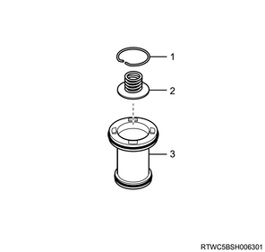
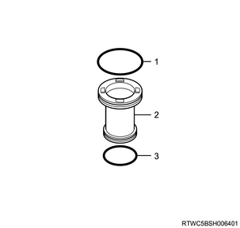
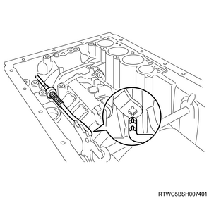
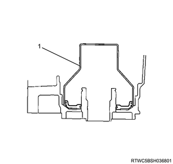
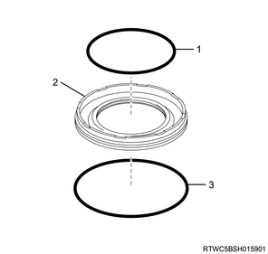

Transmission assembly disassembly (TB-50LS)
1. Torque converter assembly removal
1. Remove the torque converter assembly from the transmission.
Caution
- Be careful not to damage the oil seal.
- Be careful not to drop the torque converter assembly.

2. Breather tube removal
1. Remove the breather tube from the transmission case.
Note
- Remove the 2 bolts in order to remove the breather tube and breather hose.
- Remove the O-ring from the breather tube.
- Breather hose
- Breather tube
- M6×1.0×10mm
3. Turbine speed sensor removal
1. Remove the turbine speed sensor from the transmission case.
Caution
- Be careful not to damage the turbine speed sensor.
4. Output speed sensor removal
1. Remove the output speed sensor from the transmission case.
Caution
- Be careful not to damage the output speed sensor.

5. Elbow removal
1. Remove the elbow from the transmission case.
Note
- Remove the 2 elbows.
- Remove the 2 O-rings from the elbows.
6. Inhibitor switch removal
1. Remove the inhibitor switch from the transmission case.
Note
- Using a screwdriver, pry off the washer.
- Remove the nut to remove the washer from the inhibitor switch.
Note
- Remove the seal bolt to remove the inhibitor switch from the transmission case.
Caution
- Be careful not to damage the inhibitor switch.
7. Converter housing removal
1. Remove the converter housing from the transmission case.
- M10×1.5×35mm
- M10×1.5×35mm, Seal bolt
- M12×1.75×38mm, Seal bolt
Note
- Using a plastic hammer, tap the converter housing to remove it.
Caution
- Be careful not to damage the fitting surface of the converter housing and the transmission case.
8. Deflector removal
Note
- The following applies to 2WD.
1. Remove the deflector from the extension housing assembly.
Note
- Using a plastic hammer, tap the deflector to remove it.
Caution
- Be careful not to damage the fitting surface of the deflector and the extension housing assembly.
2. Remove the oil seal from the extension housing assembly.
Note
- Remove the oil seal from the extension housing using a pry bar, etc.
Caution
- Be careful not to damage the extension housing assembly.
9. Adapter housing removal
Note
- The following applies to 4WD.
1. Remove the adapter housing from the transmission case.

- M8×1.25×45mm
- M10×1.5×50mm, Seal bolt
Note
- Using a plastic hammer, tap the adapter housing to remove it.
Caution
- Be careful not to damage the fitting surface of the adapter housing and the transmission case.
10. Rear cover oil seal removal
Note
- The following applies to 4WD.
1. Remove the oil seal from the adapter housing.
11. Extension housing assembly removal
Note
- The following applies to 2WD.
1. Remove the extension housing assembly from the transmission case.
- M10×1.5×35mm, Seal bolt
- M10×1.5×45mm, Seal bolt
Note
- Using a plastic hammer, tap the extension housing assembly to remove it.
Caution
- Be careful not to damage the fitting surface of the extension housing assembly and the transmission case.

Note
- Using snap ring pliers, remove the snap ring.
Caution
- Be careful not to expand the snap ring too much.
Note
- Remove the bearing race, thrust needle roller bearing and the bearing race.
- Snap ring
- Bearing race
- Thrust needle roller bearing
- Bearing race
12. Oil pan removal
1. Remove the oil pan from the transmission case.
Note
- Remove the 20 bolts from the transmission case.
Note
- Using a plastic hammer, tap the oil pan to remove it.
Caution
- Be careful not to damage the fitting surface of the transmission case and the oil pan.
- Be careful not to deform the oil pan.
Note
- Remove the oil pan gasket.
13. Oil pan magnet removal
1. Remove the oil pan magnet from the oil pan.
Note
- Examine the chips and particles in the oil pan and on the oil pan magnet to determine what type of wear has occurred in the ATM.
- Steel, magnetic = bearing, gear and plate wear.
- Brass, non-magnetic = bushing wear.
14. Oil strainer removal
1. Remove the oil strainer from the valve body assembly.
2. Remove the O-ring from the oil pan.
| O-ring | |
| Inner diameter | Thickness |
| ： 31.00 mm { 1.2205 in } | ： 2.72 mm { 0.1071 in } |
Note
- Deep type oil pan
Note
- Shallow type oil pan
15. Transmission internal harness removal
1. Remove the transmission internal harness from the valve body assembly.
Note
- Disconnect the 7 solenoid assembly connectors.
- Valve body assembly wire harness clamp
Note
- Remove the 2 bolts and 2 transmission fluid temperature sensor clamps, and then pull out the transmission fluid temperature sensor from the valve body assembly.
- M6×1.0×12mm
- M6×1.0×36mm
2. Remove the transmission internal harness from the transmission case.
Note
- Remove the O-ring from the transmission internal harness.
| O-ring | |
| Inner diameter | Thickness |
| ： 21.80 mm { 0.8583 in } | ： 2.40 mm { 0.0945 in } |
16. Manual detent spring sub-assembly removal
1. Remove the Manual detent spring sub-assembly from the valve body assembly.
Note
- Remove the flange bolt to remove the manual detent spring sub-assembly and the manual detent spring cover from the valve body assembly.
- Manual detent spring cover
- M6×1.0×14mm
- Manual detent spring sub-assembly
17. Valve body assembly removal
1. Remove the valve body assembly from the transmission case.
Caution
- Be careful not to drop the valve body assembly.
- M6×1.0×25mm
- M6×1.0×36mm
18. Check valve sub-assembly removal
1. Remove the check valve sub-assembly from the transmission case.
Note
- Remove the check valve sub-assembly and the spring from the transmission case as shown in the figure.
| Spring | |
| Free | Outer |
| ： 38.55 mm { 1.5177 in } | ： 4.861 mm { 0.1914 in } |
19. Gasket removal
1. Remove the gasket from the transmission case.
- Gasket
- Gasket
20. C2 accumulator piston removal
1. Remove the C2 accumulator piston from the transmission case.
Note
- Apply compressed air into the oil passage as shown in the figure, and remove the C2 accumulator piston and the accumulator spring from the transmission case.
Caution
- Take care as the C2 accumulator piston may eject.
| Accumulator springs | |||
| Piston | Free | Outer | Color |
| C2 | ： 62.0 mm { 2.441 in } | ： 15.9 mm { 0.626 in } | White |
- C2 accumulator piston
Note
- Using a screwdriver, remove the snap ring from the C2 accumulator piston.
- Remove the spring from the C2 accumulator piston.
Caution
- Be careful not to damage the C2 accumulator piston.
| Spring | |||
| Piston | Free | Outer | Color |
| C2 | ： 14.16 mm { 0.5575 in } | ： 11.3 mm { 0.445 in } | - |

- Snap ring
- Spring
- C2 accumulator piston
Note
- Using a screwdriver, remove the 2 O-rings from the C2 accumulator piston.
Caution
- Be careful not to damage the C2 accumulator piston.
| O-ring | ||
| Piston | Inner diameter | Thickness |
| C2 | ： 20.0 mm { 0.787 in } | ： 2.62 mm { 0.1031 in } |
| ： 28.73 mm { 1.1311 in } | ： 2.62 mm { 0.1031 in } | |

- O-ring
- C2 accumulator piston
- O-ring
21. B3 accumulator piston removal
1. Remove the B3 accumulator piston from the transmission case.
Note
- Apply compressed air into the oil passage as shown in the figure, and remove the B3 accumulator piston and the accumulator spring from the transmission case.
Caution
- Take care as the B3 accumulator piston may eject.
| Accumulator springs | |||
| Piston | Free | Outer | Color |
| B3 | ： 70.5 mm { 2.776 in } | ： 19.7 mm { 0.776 in } | Purple |

- B3 accumulator piston
Note
- Using a screwdriver, remove the snap ring from the B3 accumulator piston.
- Remove the spring from the B3 accumulator piston.
Caution
- Be careful not to damage the B3 accumulator piston.
| Spring | |||
| Piston | Free | Outer | Color |
| B3 | ： 24.77 mm { 0.9752 in } | ： 16.3 mm { 0.642 in } | Purple |

- Snap ring
- Spring
- B3 accumulator piston
Note
- Using a screwdriver, remove the 2 O-rings from the B3 accumulator piston.
Caution
- Be careful not to damage the B3 accumulator piston.
| O-ring | ||
| Piston | Inner diameter | Thickness |
| B3 | ： 23.55 mm { 0.9272 in } | ： 2.62 mm { 0.1031 in } |
| ： 34.29 mm { 1.350 in } | ： 2.62 mm { 0.1031 in } | |
- O-ring
- B3 accumulator piston
- O-ring
22. C3 accumulator piston removal
1. Remove the C3 accumulator piston from the transmission case.
Note
- Apply compressed air into the oil passage as shown in the figure, and remove the C3 accumulator piston and the 2 accumulator springs from the transmission case.
Caution
- Take care as the C3 accumulator piston may eject.
| Accumulator springs | |||
| Piston | Free | Outer | Color |
| C3 | ： 44.0 mm { 1.732 in } | ： 14.0 mm { 0.551 in } | Yellow |
| ： 73.35 mm { 2.8878 in } | ： 19.9 mm { 0.783 in } | Red | |
- C3 accumulator piston
Note
- Using a screwdriver, remove the 2 O-rings from the C3 accumulator piston.
Caution
- Be careful not to damage the C3 accumulator piston.
| O-ring | |
| Inner diameter | Thickness |
| ： 26.75 mm { 1.0531 in } | ： 2.62 mm { 0.1031 in } |
| ： 34.29 mm { 1.350 in } | ： 2.62 mm { 0.1031 in } |

- O-ring
- C3 accumulator piston
- O-ring
23. Accumulator valve removal
1. Remove the accumulator valve from the transmission case.
Note
- Remove the accumulator valve and the 2 springs from the transmission case.
| Spring | ||
| Free | Outer | Color |
| ： 48.76 mm { 1.9197 in } | ： 16.6 mm { 0.654 in } | Light green |
| ： 30.40 mm { 1.1968 in } | ： 11.4 mm { 0.449 in } | pink |
- Accumulator valve
24. Parking lock pawl bracket removal
1. Remove the parking lock pawl bracket from the transmission case.
25. Parking lock rod removal
1. Remove the parking lock rod from the transmission case.

26. Parking lock pawl removal
1. Remove the parking lock pawl from the transmission case.
Note
- Pull out the parking lock pawl shaft and the torsion spring.
Caution
- Be careful not to apply too much force to the torsion spring.
Note
- Using a screwdriver, remove the snap ring from the parking lock pawl shaft.

- Parking lock pawl
- Torsion spring
- Parking lock pawl shaft
- Snap ring
27. Manual valve lever shaft removal
1. Remove the manual valve lever shaft from the transmission case.
Note
- Using a hammer and a screwdriver, cut off the spacer to remove it.
Caution
- Be careful not to damage the manual valve lever sub-assembly.
Note
- Using a hammer and a pin punch, drive out the spring pin.
Note
- Pull the manual valve lever shaft out through the transmission case, and remove the select control lever.
- Manual valve lever shaft
- Manual valve lever sub-assembly
28. Oil seal removal
1. Remove the oil seal from the transmission case.
Note
- Using a screwdriver, remove the 2 oil seals.
Caution
- Be careful not to damage the transmission case.
29. Oil pump assembly removal
1. Remove the oil pump assembly from the transmission case.
2. Remove the oil pump assembly from the transmission case using a remover.
Caution
- Be careful not to drop the oil pump assembly from the transmission case.
Note
- Remove the O-ring from the oil pump assembly.
| O-ring | |
| Inner diameter | Thickness |
| ： 218.40 mm { 8.5984 in } | ： 3.50 mm { 0.1378 in } |
Note
- Remove the thrust needle roller bearing and the thrust bearing race No.1 from the oil pump assembly.
- Thrust needle roller bearing
- Thrust bearing race No.1
- O-ring
- Oil pump assembly
3. Remove the oil seal from the oil pump assembly using the driver.
30. Forward clutch assembly removal
1. Remove the forward clutch assembly from the transmission case.
Note
- Remove the forward clutch assembly and direct clutch assembly with the 1way clutch assembly No.3.
Caution
- Be careful not to drop the forward clutch assembly and direct clutch assembly.
- Be careful not to drop the 1way clutch assembly No.3.
- Forward clutch assembly and Direct clutch assembly
Note
- Remove the thrust bearing race and the thrust needle roller bearing from the forward clutch assembly and direct clutch assembly.
- Forward clutch assembly and Direct clutch assembly
- Thrust needle roller bearing
- Thrust bearing race
Note
- Remove the clutch hub thrust washer, 1way clutch assembly No.2 and the clutch drum thrust washer from the forward clutch assembly and direct clutch assembly.
- Clutch hub thrust washer
- 1way clutch assembly No.2
- Clutch drum thrust washer
- Forward clutch assembly and Direct clutch assembly
31. Brake disc No.3 removal
1. Remove the brake disc No.3 from the transmission case.
Note
- Using a screwdriver, remove the snap ring from the transmission case.
Note
- Remove the flange, discs, plates and cushion plate.
Caution
- Check the number of disc and plate.
- Cushion plate
- Disc, 4 pcs.
- Flange
- Plate, 4 pcs.
32. 1way clutch inner race sub-assembly removal
1. Remove the 1way clutch inner race sub-assembly from the transmission case.
Note
- Using snap ring pliers, remove the hole snap ring from the transmission case.

SST: 5-8840-2961-0 - snap ring pliers

- Snap ring pliers
Note
- Remove the brake piston return spring sub-assembly No.3, brake piston No.2 and brake piston No.3 with the 1way clutch assembly No.1, planetary carrier thrust washer No.1 and the 1way clutch inner race sub-assembly.
Note
- Remove the 1way clutch inner race sub-assembly and the planetary carrier thrust washer No.1 from the 1way clutch assembly No.1.
- Remove the 1way clutch assembly No.1 from the brake piston return spring sub-assembly No.3, brake piston No.2 and brake piston No.3.
- 1way clutch inner race sub-assembly
- Planetary carrier thrust washer No.1
- 1way clutch assembly No.1
- Brake piston return spring sub-assembly No.3, 2nd brake piston No.3 and brake piston No.3
33. Front planetary gear assembly removal
1. Remove the front planetary gear assembly from the transmission case.
Note
- Remove the front planetary gear assembly and the planetary carrier thrust washer No.2.

- Planetary carrier thrust washer No.2
- Front planetary gear assembly
34. Front planetary ring gear removal
1. Remove the front planetary ring gear from the transmission case.
Note
- Remove the front planetary ring gear, front planetary ring gear flange and middle planetary ring gear.
- Remove the thrust bearing race No.3 and the thrust needle roller bearing from the front planetary ring gear, front planetary ring gear flange and middle planetary ring gear.
- Front planetary ring gear, front planetary ring gear flange and middle planetary ring gear
- Thrust needle roller bearing
- Thrust bearing race No.3
35. Brake disc No.1 removal
1. Remove the brake disc No.1 from the transmission case.
Note
- 4JJ1
- Remove the flange, discs and plates.
- Check the number of disc and plate.
- Plate, 4 pcs.
- Disc, 4 pcs.
- Flange
Note
- 4JK1
- Remove the flange, discs and plates.
- Check the number of disc and plate.
- Plate, 3 pcs.
- Disc, 3 pcs.
- Flange
36. Middle planetary gear assembly removal
1. Remove the middle planetary gear assembly from the transmission case.
Note
- Remove the middle planetary gear assembly and planetary sun gear.
- Remove the thrust needle roller bearing and the thrust bearing race No.4 from the middle planetary gear assembly.
- Planetary sun gear
- Middle planetary gear assembly
- Thrust bearing race No.4
- Thrust needle roller bearing
37. Brake piston No.1 removal
1. Remove the brake piston No.1 from the transmission case.
Note
- Using a screwdriver, remove the hole snap ring from the transmission case.
Note
- Remove the brake piston return spring sub-assembly and the brake piston No.1 and brake cylinder No.1.
- Brake piston No.1 and Brake cylinder No.1
- Brake piston return spring sub-assembly
38. Brake disc No.2 removal
1. Remove the brake disc No.2 from the transmission case.
Note
- Using a screwdriver, remove the hole snap ring from the transmission case.

Note
- Remove the brake flange No.2.
Note
- 4JJ1
- Remove the discs, plates and flange.
- Check the number of disc and plate.
- Plate, 3 pcs.
- Flange
- Disc, 4 pcs.
Note
- 4JK1
- Remove the discs and plates.
- Check the number of disc and plate.
- Plate, 3 pcs.
- Disc, 3 pcs.
Note
- Remove the brake piston return spring sub-assembly No.2.
39. Brake cylinder No.2 removal
1. Remove the brake cylinder No.2 from the transmission case.
Note
- Remove the brake piston No.2 and brake cylinder No.2 from the transmission case.
40. Plate stopper spring removal
1. Remove the plate stopper spring from the transmission case.
41. Intermediate shaft removal
1. Remove the intermediate shaft from the transmission case.
Note
- Using snap ring pliers, remove the hole snap ring from the transmission case.
SST: 5-8840-2961-0 - snap ring pliers
- Snap ring pliers
Note
- Remove the intermediate shaft with the 1way clutch inner race sub-assembly, 1way clutch assembly No.3, rear planetary ring gear flange sub-assembly and rear planetary ring gear, thrust bearing race No.7, thrust needle roller bearing and thrust bearing race No.8 from the transmission case.

Note
- Remove the 1way clutch inner race sub-assembly, 1way clutch assembly No.3, rear planetary ring gear flange sub-assembly and rear planetary ring gear, thrust bearing race No.7, thrust needle roller bearing and the thrust bearing race No.8 from the intermediate shaft.

- Intermediate shaft
- Thrust bearing race No.8
- Thrust needle roller bearing
- Thrust bearing race No.7
- Rear planetary ring gear flange sub-assembly and Rear planetary ring gear
- 1way clutch assembly No.3
- 1way clutch inner race sub-assembly
42. Brake disc No.4 removal
1. Remove the brake disc No.4 from the transmission case.
Note
- Remove the 2 flanges, discs and plates.
- Check the number of disc and plate.
- Flange
- Disc, 8 pcs.
- Flange
- Plate, 7 pcs.
43. Rear planetary gear assembly removal
1. Remove the rear planetary gear assembly from the transmission case.
Note
- Remove the rear planetary gear assembly with the thrust bearing race No.9, thrust needle roller with race bearing and thrust needle roller bearing.
- Thrust needle roller with race bearing
- Thrust bearing race No.9
- Rear planetary gear assembly
- Thrust needle roller bearing
44. 1st and reverse brake return spring sub-assembly removal
1. Remove the 1st and reverse brake return spring sub-assembly from the transmission case.
Note
- Place spring compressor on the 1st and reverse brake return spring sub-assembly and compress the spring with a press.
SST: 5-8840-2966-0 - spring compressor
Note
- Using snap ring pliers, remove the shaft snap ring.
Caution
- Be careful not to expand the shaft snap ring too much.
- Spring compressor
- Shaft snap ring
Note
- Remove the 1st and reverse brake return spring sub-assembly.
45. Inner brake piston removal
1. Remove the inner brake piston from the transmission case.
Note
- While pushing the inner brake piston by hand, apply compressed air into the oil passage as shown in the figure and remove the inner brake piston from the transmission case.
- When applying compressed air, shut an oil passage of the transmission case as shown in the figure.
Compressed air： 392 kPa { 4.0 kgf/cm2 / 57 psi }
Note
- Remove the inner brake piston.
2. Remove the brake reaction sleeve from the transmission case using special tool.
SST: 5-8840-2967-0 - reaction sleeve puller
- Reaction sleeve puller
3. Remove the 1st and reverse brake piston from the transmission case using special tool.
SST: 5-8840-2968-0 - piston puller

- Piston puller
Note
- Remove the 2 O-rings from the inner brake piston.
| O-ring | |
| Inner diameter | Thickness |
| ： 67.35 mm { 2.6516 in } | ： 2.62 mm { 0.1031 in } |
| ： 116.40 mm { 4.5827 in } | ： 2.62 mm { 0.1031 in } |

- O-ring
- Inner brake piston
- O-ring
Note
- Remove the 2 O-rings from the brake reaction sleeve.
| O-ring | |
| Inner diameter | Thickness |
| ： 79.10 mm { 3.1142 in } | ： 2.62 mm { 0.1031 in } |
| ： 128.00 mm { 5.0394 in } | ： 2.62 mm { 0.1031 in } |

- O-ring
- Brake reaction sleeve
- O-ring
Note
- Remove the O-ring from the 1st and reverse brake piston.
| O-ring | |
| Inner diameter | Thickness |
| ： 131.60 mm { 5.1811 in } | ： 2.62 mm { 0.1031 in } |
- 1st and reverse brake piston
- O-ring